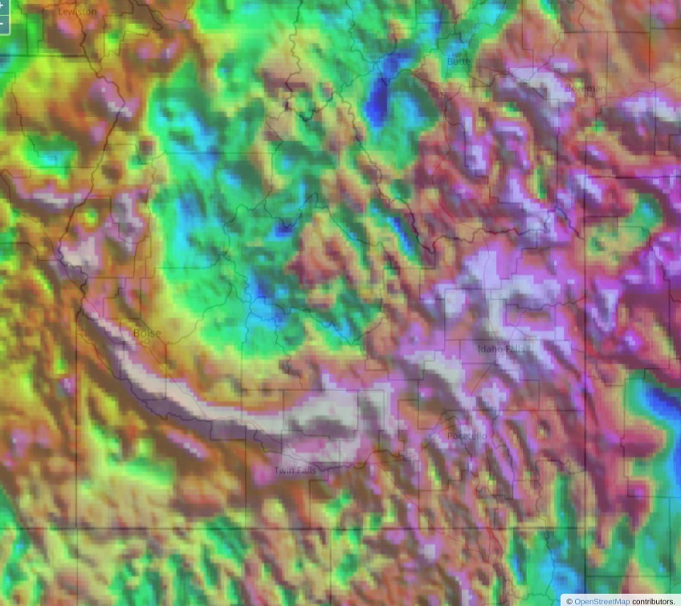
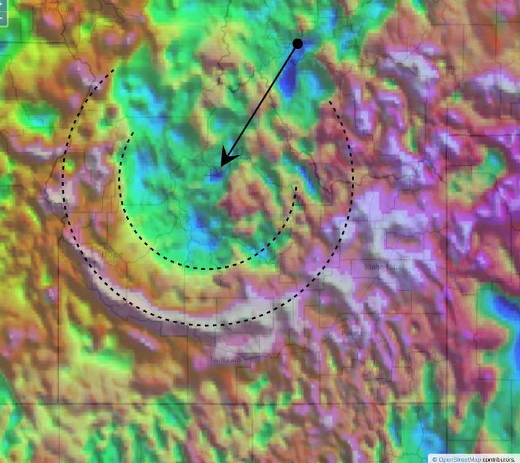
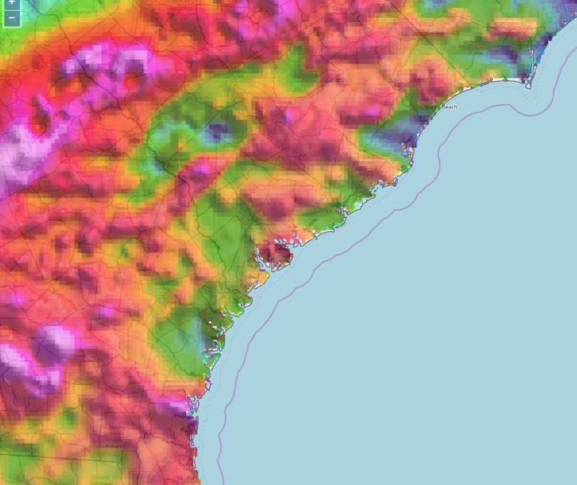
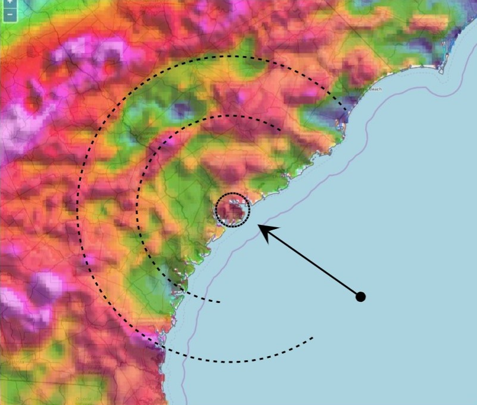
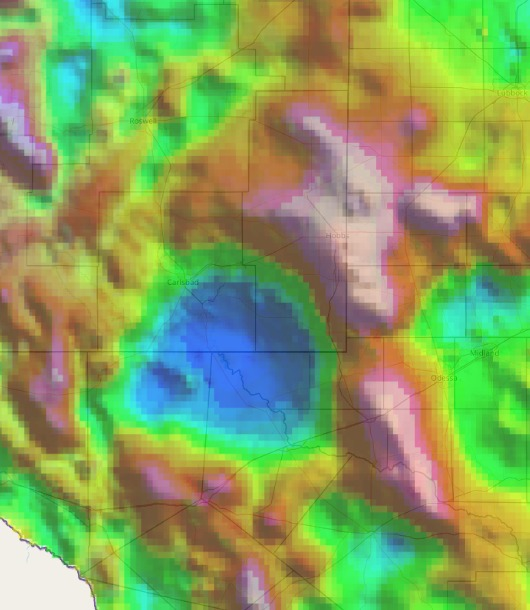
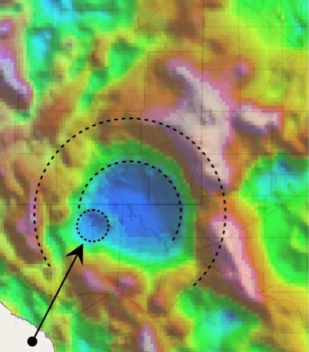
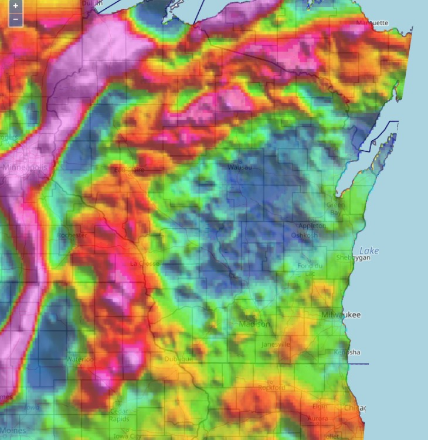
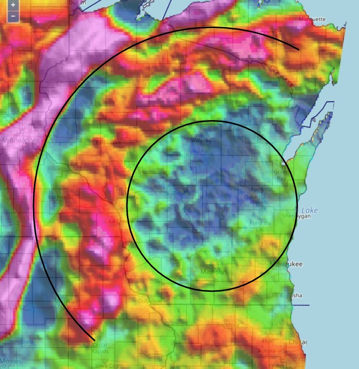
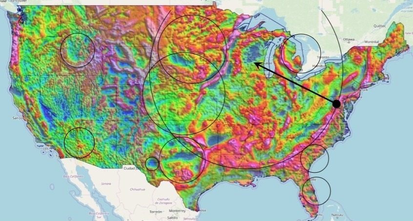

A life-destroying impact crater lies just below the surface of
what is, now, a nearly flat eroded plain.
But, using a gravity anomaly visualization map ...

... the forms of this obvious impact crater
clearly stand out.
The magenta-colored, high-gravity,
arc rim of the outer wall emerges around the blue-green,
low-gravity areas of the crater's floor.
An arrow indicates the distinct
small blue, low-gravity, depression at the center
of this classic bowl crater.

Epicentered just off the coast of Chixulu...
Ooops - wait a second, that isn't the right picture.
Let me start again.
Ok, here's the correct image:

Situated at the edge of the coastline,
this gravity anomaly map shows
all of the distinctive features of a classic impact
crater:

The arrow indicates the high-gravity, uplifted area of
the central peak; a lower-gravity
inner basin surrounds that,
leading up to the obvious peak ring.
From there, another low-gravity depression forms the
annular trough, encompassed by the magenta-colored,
high-gravity of the outer rim.
No one could mistake the dramatic features of this reknowned
impact crater, located near the town of Chixu...
Oooh - sorry. I can't believe this happend again.
I'm so sorry; this isn't the right image. Let me find
the right one.
Ok, here it is - this time it's correct.
Who can argue with this? Nothing could be a more obvious
impact crater! The blue, low-gravity depression of the crater's
floor leads inextricably to the surrounding
terrace walls of the rim.

One can also make out the secondary impact from one of the
disruption fragments - here indicated by an arrow.

Wait, what? Are you kidding me?!! Who is in charge
of these slides?!!!
One. More. Time. Ok, I got it, I got it. Look at this:

In this gravity anomaly map, a distinctive arc of high-gravity
surrounds a blue region of low-gravity.

What is, unmistakeably,
the site of an impact crater just off the coast of the
small town of Chix ...
ARE YOU KIDDING ME?!!!
Wow - so, none of these is from anywhere near
that place? You're telling me all these images are
USGS gravity anomaly maps of the contiguous US?
Hmm ... let me see that whole map again.
Well, it looks like there's just countless places
that could be interpreted as impact crater features.
I mean to say is - how many of these did you see?

Now that you've had the circles pointed out, go back and
look at the raw map again; tell me if you don't see all
of those circles - or more.
When paleontologists see a million acres of grassland,
destroyed by wildfire, they look for a million-acre-wide
asteroid, instead of the cigarette that caused it.